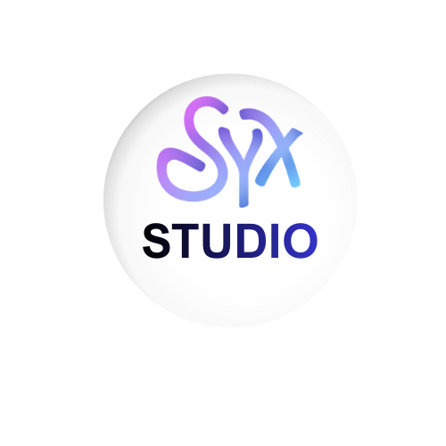
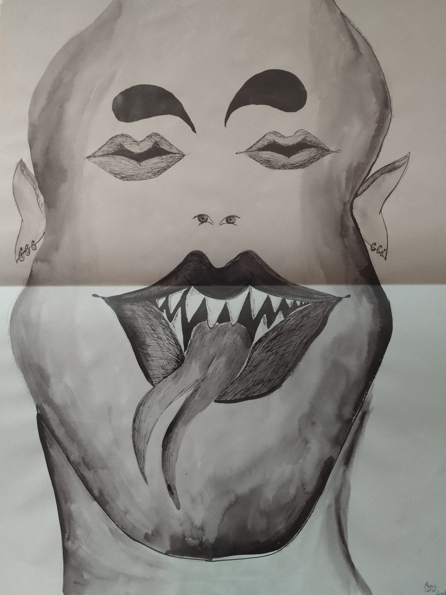

<body class="home">

<header class="home-header">
  
  <h1>Alyxia Collet</h1>
  <p class="subtitle">Portfolio artistique – Candidate DN MADE<br>Élève de seconde</p>
</header>
</header>

  <main>

    <section class="highlight">
      <figure>
        
        <figcaption>
          Extrait de recherches personnelles – dessin et expérimentation plastique
        </figcaption>
      </figure>
    </section>

    <nav class="main-nav">
      <a href="arts-visuels.html" class="btn">Arts visuels</a>
      <a href="arts-decoratifs.html" class="btn">Arts décoratifs</a>
      <a href="work-in-progress.html" class="btn emphasis">
        Work in progress
      </a>
      <a href="a-propos.html" class="btn">À propos</a>
    </nav>

  </main>

</body>
